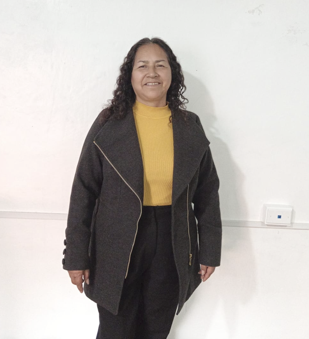
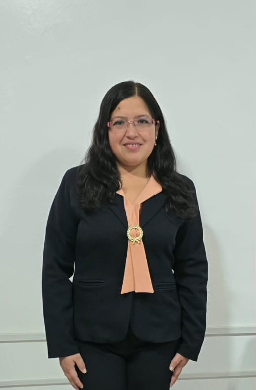

Red de Salud Celendín
Institución responsable de planificar, coordinar, supervisar y fortalecer los servicios de salud en toda la provincia de Celendín, garantizando una gestión eficiente, transparente y orientada al bienestar de la población.
La Red Integrada de Salud Celendín articula y gestiona los establecimientos de salud
de la provincia, promoviendo estrategias sanitarias, acciones de prevención,
fortalecimiento del talento humano y mejora continua de los servicios.
En este portal encontrarás noticias, documentos institucionales, estadísticas,
campañas y toda la información relevante para la ciudadanía y el personal de salud.

LA RED DE SALUD CELENDİN ES UN ÓRGANO DESCENTRALIZADO DE LA DIRESA CAJAMARCA QUE TIENE COMO FINALIDAD PROPORCIONAR SOPORTE TÉCNICO ADMINISTRATIVO A LAS MICRORREDES E INSTITUCIONES PRESTADORAS DE SERVICIOS DE SALUD PARA BRINDAR EL CUIDADO INTEGRAL AL INDIVIDUO EN SUS DIFERENTES CURSOS DE VIDA, FAMILIA Y COMUNIDAD CON UN ENFOQUE DE PROMOCIÓN DE LA SALUD E INTERCULTURALIDAD DE MANERA OPORTUNA Y ADECUADA.
SER RECONOCIDA COMO UNA RED INTEGRADA DE SALUD Y UNA UNIDAD EJECUTORA DE SALUD FUNCIONAL, CON UN EQUIPO TÉCNICO MULTIDISCIPLINARIO, ADMINISTRATIVO Y ASISTENCIAL COMPROMETIDO EN GARANTIZAR LOS SERVICIOS DE SALUD CON CALIDAD, EFICIENCIA Y CALIDEZ BASADO EN EL MODELO DE CUIDADO INTEGRAL DE SALUD EN ATENCIÓN A LA PERSONA POR CURSO DE VIDA, LA FAMILIA Y COMUNIDAD.
Áreas estratégicas responsables de la gestión y fortalecimiento del sistema de salud.
Conduce y dirige la gestión institucional de la Red de Salud Celendín.
Gestiona el talento humano y el desarrollo del personal.
Formula planes, metas institucionales y presupuesto.
Gestiona recursos financieros, logísticos y patrimoniales.
Supervisa las estrategias y cursos de vida en la Red.
Gestiona tecnologías de información y estadísticas sanitarias.
Realiza vigilancia epidemiológica y análisis de riesgos.
Fortalece la organización y calidad de los servicios asistenciales.
Administra la cobertura y afiliación de aseguramiento en salud.
Impulsa estilos de vida saludables y participación comunitaria.
Vigila factores ambientales que impactan en la salud pública.
Gestiona el suministro y control de medicamentos e insumos.
Coordina la respuesta ante emergencias, urgencias y desastres.
Realiza procesamiento y análisis de muestras para apoyo diagnóstico.
Datos referenciales que pueden actualizarse con información oficial.
Establecimientos de Salud
MICROREDES
Trabajadores del Sector Salud
Cobertura de Vacunación
Equipo directivo comprometido con la gestión institucional.

Máxima autoridad institucional responsable de la conducción, planificación y supervisión de la Red Integrada de Salud Celendín.

Gestiona los procesos relacionados con el personal de salud y coordina la incorporación, asignación y seguimiento de los profesionales SERUMS en los establecimientos de salud.

Gestiona la planificación institucional, el seguimiento de metas y recursos, así como la adquisición, distribución y control de bienes y servicios necesarios para el funcionamiento de la institución.
Gestiona y coordina los procesos administrativos, asegurando el uso eficiente de los recursos y el adecuado funcionamiento de la institución.
Consulta y descarga el Plan Operativo Institucional de la Red Integrada de Salud Celendín.
Descargar POI Institucional